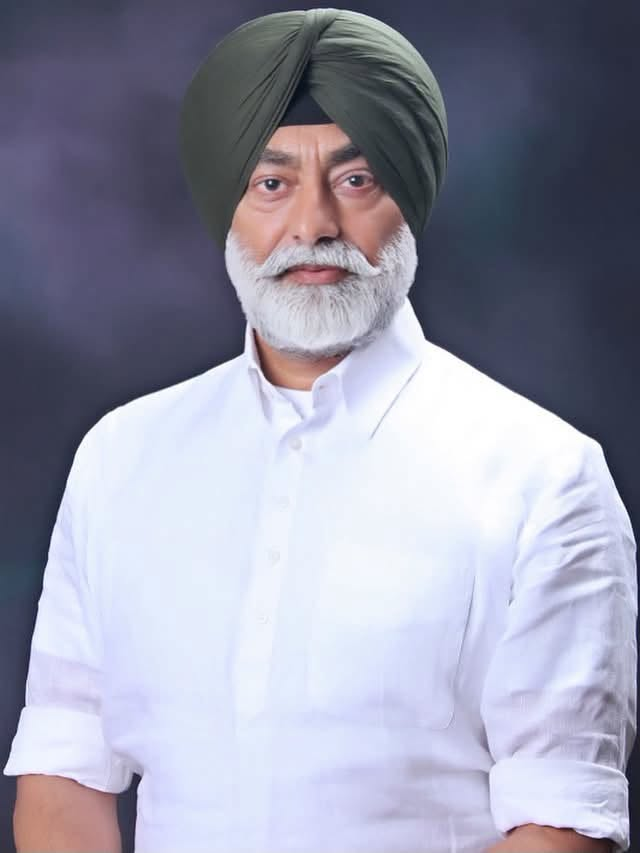

Congress • Punjab
Sardar Sukhpal Singh Khaira
Follow the public Facebook page for posts, announcements, photographs and public updates.
Follow on FacebookCongress Party • Punjab
Thanks to Join Our Party Mission 2027
Visit Facebook PageLatest Updates
Follow the public Facebook page for posts, announcements, photographs and public updates.
Follow on FacebookThe public Facebook Page timeline below loads automatically when this page opens. Availability depends on Facebook privacy, login and embedding settings.
Mission 2027 — public participation, dialogue and a shared vision for Punjab.
This is an informational/supporter-style webpage template. Political claims, endorsements, event details and campaign material should be verified with the relevant official organization before publication.